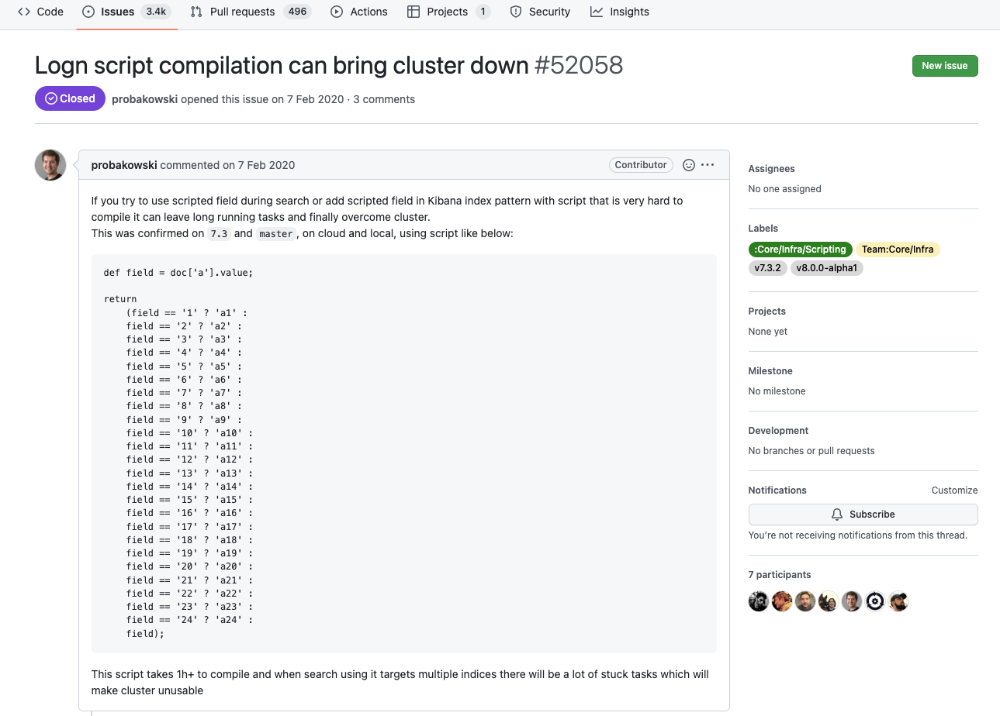

Надежность информационных систем
Лекции
Зачем это изучать?
- Если не работать в ИТ?
- Если работать в ИТ?

Организационная информация
Лектор
Масленников Дмитрий Михайлович
Руководитель центра надежности ИС
Лекции
- Обязательно посещаем
- В конце курса сдаем экзамен по билетам
- Итоговая оценка не должна быть ниже 3 (из 10)
Семинары
- Обязательно посещаем
- Делаем практические работы
- Итоговая оценка не должна быть ниже 3 (из 10)
Итоговая оценка
0.4 оценка_за_экзамен + 0.6 оценка_за_семинары
оценка_за_экзамен >= 3 (из 10)
оценка_за_семинары >= 3 (из 10)
Сбои
Сбои бывают не только в ИТ
Катастрофа шаттла «Челленджер»


Авария на Deepwater Horizon


Авария на Чернобыльской АЭС

Аполлон 13

Сбои в ИТ системах
Работа с настройками
Масштабный сбой в мобильном банке на Android
11 декабря 2020
На Android не отображались счета и продукты на главном экране
Пострадало около 300 тысяч пользователей
Написали РБК, ТАСС и Коммерсант

Причины
- Сначала думали, что дело в «историях» — потеряли время
- Оказалось, что добавили новый продукт, но заполнили не все поля
- Продукты добавлялись простым редактированием JSON
- Не было валидации на сервере
- Не было валидации на клиенте (мобильное приложение)
- Мобильное приложение Android не отображало все продукты, а не только один невалидный
- Мобильные приложения кешировали список продуктов на сутки
- Возможность принудительного сброса кеша не была предусмотрена
- Возможность массовой коммуникации с пользователями не была предусмотрена
Выводы
- Надо валидировать настройки приложения, даже если их меняет опытный администратор
- Мобильное приложение должно валидировать данные пришедшие с сервера
- Мобильное приложение должно уметь работать с частично валидными данными
- Кешами на мобильном приложении надо уметь управлять с сервера
- В мобильное приложение надо предусмотреть возможность коммуникации с пользователями во время сбоев
Про алгоритмы и асимптотику
Система аналитики Sage
23-24 сентября 2020
Пример Sage запроса
group="platform_client"
(level:"ERROR" OR level:"FATAL" OR level:"WARN")
"TypeError" env="prod"
| where
if("(pfp|pwa).*" != ".*",
appName=="(pfp|pwa).*",
appName:"pwa*" OR appName:"pfp*")
| timechart count as TypeError
Соответствующий запрос в Elastic Search
{
"query":{
"bool":{
"must":[
{
"range":{
"@timestamp":{
"gte":"2020-09-25T03:28:19.269Z",
"lt":"2020-09-25T09:28:19.269Z"
}
}
},
{
"bool":{
"filter":[
{
"bool":{
"filter":[
{
"bool":{
"filter":[
{
"term":{
"group":"platform_client"
}
},
{
"bool":{
"should":[
{
"span_near":{
"in_order":true,
"slop":0,
"clauses":[
{
"span_term":{
"level":"error"
}
}
]
}
},
{
"bool":{
"should":[
{
"span_near":{
"in_order":true,
"slop":0,
"clauses":[
{
"span_term":{
"level":"fatal"
}
}
]
}
},
{
"span_near":{
"in_order":true,
"slop":0,
"clauses":[
{
"span_term":{
"level":"warn"
}
}
]
}
}
]
}
}
]
}
}
]
}
},
{
"span_near":{
"in_order":true,
"slop":0,
"clauses":[
{
"span_term":{
"all":"typeerror"
}
}
]
}
}
]
}
},
{
"script":{
"script":{
"lang":"painless",
"source":"
boolean fulltextSearch(String s, String p) {\n
s = s.toString().toLowerCase();\n
p = p.toString().toLowerCase();\n
if (!p.contains('*')) {\n
return s.contains(p);\n
}\n
int i = 0;\n
int j = 0;\n
int starIndex = -1;\n
int iIndex = -1;\n
while (i < s.length()) {\n
if (j < p.length() && p.charAt(j) == s.charAt(i)) {\n
++i;\n
++j;\n
} else if (j < p.length() && p.charAt(j) == (char)'*') {\n
starIndex = j;\n
iIndex = i;\n
j++;\n
} else if (starIndex != -1) {\n
j = starIndex + 1;\n
i = iIndex+1;\n
iIndex++;\n
} else {\n
return false;\n
}\n
}\n
while (j < p.length() && p.charAt(j) == (char)'*') {\n
++j;\n
}\n
return j == p.length();\n
}
def s11 = \"pfp*\";
def s10 = (
!doc.containsKey('appName.keyword')
|| doc['appName.keyword'].size() == 0 ? null : doc['appName.keyword'].value);
def s12 = ((s10) != null && fulltextSearch(s10,s11));
def s8 = \"pwa*\";
def s7 = (
!doc.containsKey('appName.keyword')
|| doc['appName.keyword'].size() == 0 ? null : doc['appName.keyword'].value);
def s9 = ((s7) != null && fulltextSearch(s7,s8));
def s13 = (s9 == null || s12 == null ? null : s9 || s12);
def s5 = \"(pfp|pwa).*\";
def s4 = (
!doc.containsKey('appName.keyword')
|| doc['appName.keyword'].size() == 0 ? null : doc['appName.keyword'].value);
def s6 = (s4 == s5);
def s2 = \".*\";
def s1 = \"(pfp|pwa).*\";
def s3 = (s1 != s2);
def result = (s3 === true ? s6 : s13);
return result == null ? false : result"
}
}
}
]
}
}
]
}
},
"aggs":{
"buckets":{
"composite":{
"sources":[
{
"@timestamp":{
"date_histogram":{
"field":"@timestamp",
"fixed_interval":"300s"
}
}
}
],
"size":2500
},
"aggs":{
}
}
},
"_source":true,
"track_total_hits":true,
"size":0
}
24 июля
Выложен новый функционал: функция case
group="default"
| eval priority=case(level="INFO", "1", level="DEBUG", "2")
| fields level, status
23 сентября
Пользователь посылает запрос
group="mp_smsc" logfile:"1-smsc*"
| eval kodik=case(
Error_code="1-02", "Некорректный адрес отправителя",
Error_code="1-03", "Адрес отправителя обнаружен в черном списке",
Error_code="1-04", "Адрес получателя обнаружен в черном списке",
<Еще 19 похожих строк...>
Error_code="8-01", "Попытка регистрации дубликата части конкатенированного сообщения"
)
| timechart span=10m count by kodik, inst
Фрагмент запроса в Elastic Search
return (
s3 === true ? s4 :
s7 === true ? s8 :
s11 === true ? s12 :
s15 === true ? s16 :
s19 === true ? s20 :
<...>
s91 === true ? s92 :
null
);
Баг в Elastic Search
«Осбенности» бага в Elastic
- Все работает «без ошибок», только очень медленно
- У Elastic Search все Painless Script запросы парсятся одним воркером
- Запросы с Painles Script блокируют один воркер для процессинга запросов до стадии парсинга
- Запросы без Painless Script работают, пока не закончатся воркеры процессинга
- Сам Elastic думает, что у него все работает
Второй баг
Приложение, реализующее преобразование запросов, не освобождало соединения при таймауте со стороны Elastic Search
Наличие второго бага существенно осложнило поиск причин сбоев
У Sage тысячи пользователей, которые генерируют много запросов.
Даже догадавшись, что дело в «плохом» запросе, поиск его — поиск «иголки в стоге сена».
Выводы
- Проблема может проявиться сильно после релиза
- Если пользователям доступен язык запросов, то тестировать становится сильно сложнее
- Несколько проблем могут закрывать дург друга усложняя поиск причин
- Асимптотика важна в неожиданных местах
Каскадный сбой от маленькой утилиты
17 февраля 2021
Filebeat
Простая утилита для загрузки логов
Filebeat обычно используется для загрузки логов в Elastic Search
17 февраля в 15:08
Filebeat загрузил CPU одной из нод Hazelcast на 100%
Распространение влияния
- Hazelcast начал медленно отвечать, а затем у него закончились файловые дескрипторы
- Основной API начал медленно отвечать на запросы или отвечать с ошибкой
- Системы обращающиеся к API начали посторять запросы
- Еще больше увеличили нагрузку на API
- Увеличили нагрузку на соседние системы (которые надо вызывать совместно с API, или которые вызывает API в процессе работы)
Влияние на Банк
- Ошибки при входе в мобильные приложения
- Не загружались счета
- Не работали платежи и переводы
Влияние на Страховую
- Невозможно было рассчитать, оформить продлить и облатить ОСАГО
Влияние на Инвестиции
- Трудно войти в приложение
- Пользователи не видели свои счета
- Не получалось получить информацию о ценных бумагах
- Не возможно купить или продать бумаги, виставить лимитные заявки
Влияние на другие сервисы
- Не работал голосовой помощник
- Нельзя было записать телефонный разговор
- На колценнтр скопилась огромная очередь
- Внимание со стороны регулятора
- Просели рейтинги приложений в AppStore и Google Play
Выводы
- Вспомогательные приложения должны быть ограничены по максимальному использованию ресурсов
- Надо очень внимательно продумывать работу приложений во время сбоев, особенно при повторных вызовах
- Необходим план действий во время масштабных сбоев, включая работу поддержки и PR
Спасибо за внимание!
Вопросы?